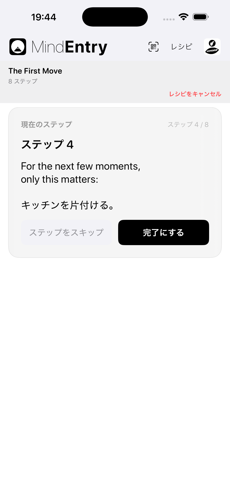
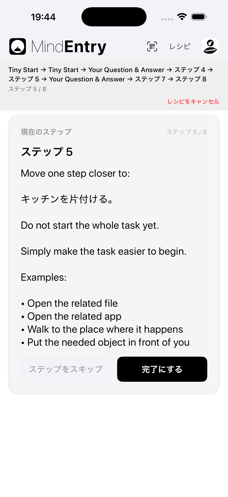
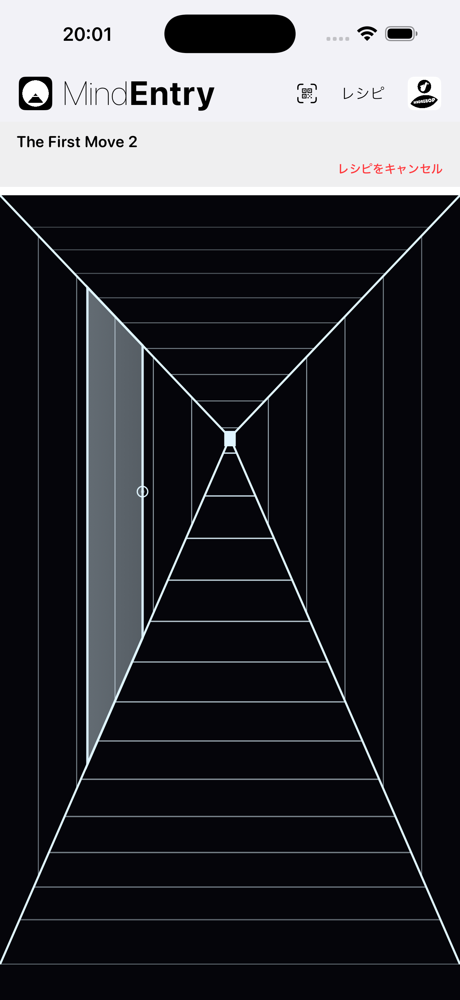
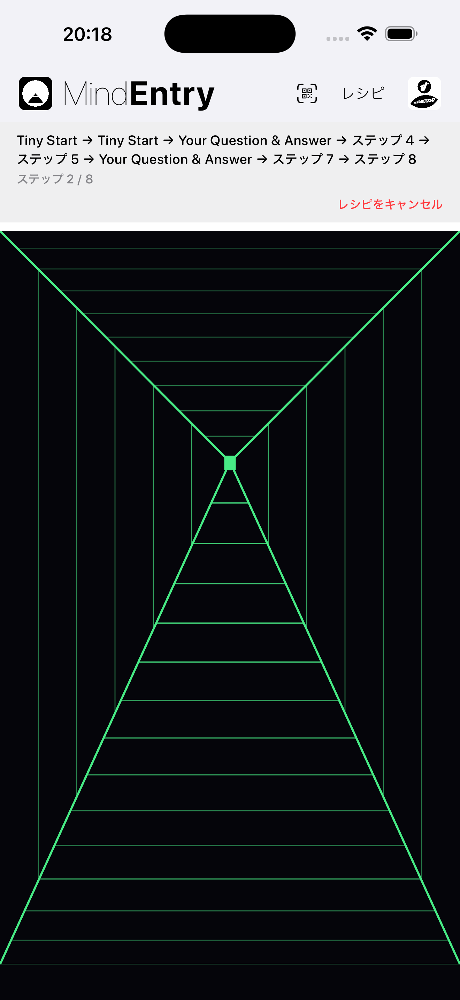

レシピを進むための、もうひとつの方法。
Hallway Mode は、MindEntry レシピのための別の表示モードです。
レシピそのものは変わりません。 変わるのは、その進み方です。
Hallway Mode では、ステップから次のステップへ直接移動する代わりに、 ステップとステップの間に小さな静かな空間が置かれます。
あなたは廊下を前へ進みます。 少し進むとドアが現れます。 ドアを開くと、次のステップが現れます。
同じレシピ。 進み方が違います。
ときには、難しいのはステップそのものではありません。 レシピ全体をひとつの流れとして捉えることです。
Hallway Mode は、次に必要なことだけに注意を向けることで、 その摩擦を減らします。
レシピは「眺めるもの」ではなく、 「通り抜けるもの」になります。
シンプルで、わかりやすく、効率的。
Standard Mode では、レシピはステップの連続として表示されます。
最もシンプルで最短の方法でレシピを進みたいときに適しています。
ステップ → 完了 → 次のステップ
心がすでに構造を受け入れられる状態のとき、 Standard Mode は自然に機能します。


ステップとステップの間にある静かな空間。
Hallway Mode は、ステップの間に「移動」を加えます。
廊下には最初、ドアは見えていません。 前へ進みます。 少し進むとドアが現れます。 ドアノブをタップすると、次のステップが開きます。
ステップ → 前へ進む → ドア → 次のステップ
次のドアは、少し前進したあとに現れます。 距離はステップごとに少し変わるため、 レシピはチェックリストというより、 導かれる通路のように感じられます。
複数のドアから選ぶことはありません。 後戻りもしません。 先へ飛ばすこともできません。 廊下はただ、次に必要な場所へあなたを運びます。


同じステップでも、そこへ至るまでの過程によって感じ方は変わります。
心に余裕があるとき、リストは役に立つものに感じられます。
心が固まっているとき、圧倒されているとき、あるいは気が進まないとき、 リストはさらに重荷に感じられることがあります。
Hallway Mode は問いを次のように変えます。
あと何ステップ残っているだろう？
から、
次のドアはどこだろう？
へ。
この小さな変化が、認知的な摩擦を減らします。
Hallway Mode は、レシピ全体を管理することを求める代わりに、 心にひとつのシンプルな行動だけを渡します。
前へ進む。
インタラクティブなレシピが、入力フォームではなく導かれる体験になります。
Stateful Recipes は、実行中に入力や選択した内容に応じて変化できます。
Standard Mode では、そのやり取りは構造化されたワークフローのように感じられます。
質問 → 回答 → 次のステップ
Hallway Mode では、同じやり取りが導かれる通路のように感じられます。
ドア → 質問 → 前へ進む → 次のドア
これは、心が固まっているときに重要になります。
固まった心に必要なのは、より多くの選択肢ではありません。 もっと小さな次の一歩です。
Hallway Mode は、レシピの全体構造を頭の中で保持しなくても、 インタラクティブな体験を維持します。
多くのアプリはステップそのものに焦点を当てます。
Hallway Mode が焦点を当てるのは、その間にある空間です。
その空間によって、前のステップが終わり、 次のステップが始まるまでの小さな余白が生まれます。
レシピは今まで通り MindEntry 上で実行されます。 ステップの内容も変わりません。 違うのは、そのステップへ心がどのようにたどり着くかです。
Hallway Mode は、ステップを減らしてレシピを簡単にするものではありません。
次のステップと出会いやすくするためのものです。
Copyright © 2026 MINDBEBOP — All rights reserved.